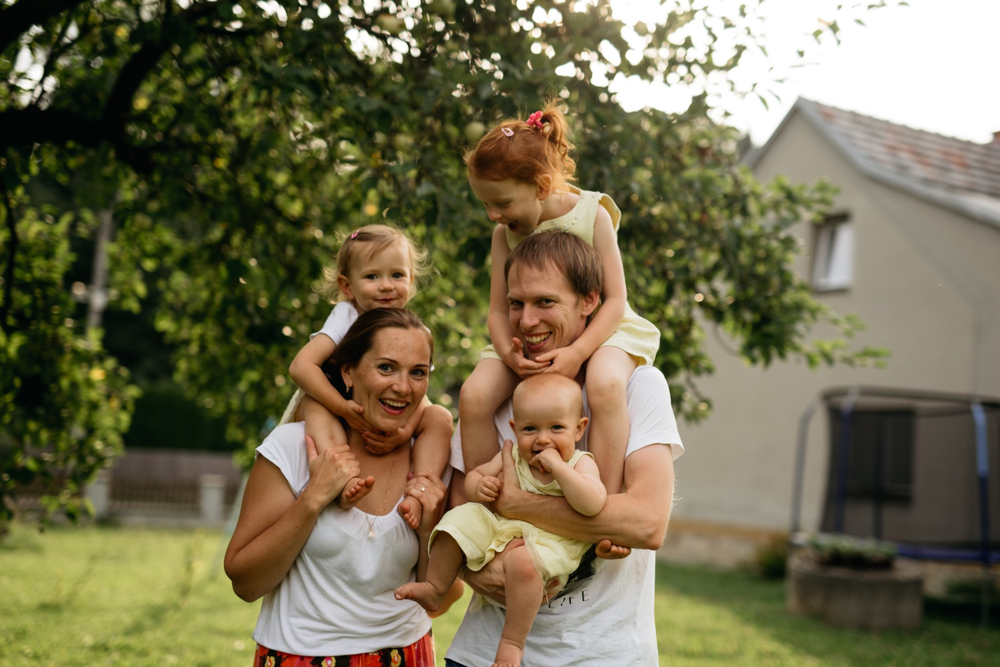

Profile
Jan Brus

Hello,
My name is Jan Brus. I'm a full-stack software developer since 2010. At this time i focus on Angular
and Flutter and you could consider me ninja developer, but the most experiences I have are C# and
SQL.
I live with my wife and 3 girls in a house in a small willage in Czechia (Morava region).
Personality: I'm very creative person, open minded and family oriented. My career so far has
been mostly corporate employment, working in teams. Latest assigment and side hustles have been
individual work and i have no trouble with either working in team or taking care of everything
myself.
Experiences: My programming experiences are very broad. I have started in C# .Net (first ASP,
then WPF) doing some WordPress and web design on the side (3-years). Then i continued working mostly
with databases (1-year). After that i got my most progressive job which was TeamLeader of C# Scrum
team (2-years). For family reasons I had to change jobs and switched to java (1-year) and was
finishing my thesis in PHP/Kotlin. Shortly after that my manager offered me to work on a project as
full-stack developer. I did not hesitate a bit. Currently I'm working on Angular project with java
backend as the sole developer.
Personal life: After my bachelors studies in IT I have moved to Prague to find a software
developer job. I lived there for 3 years when i met my now wife. We lived together in or near Prague
and started a family there. I also finished my studies and got Ing. degree (which is equivalent to
Master of Science in engineering in the US), but my original family was located in Moravia so we
moved to my roots because it was better for our first child to have a grandparents closer. We live
in Moravia region since then, got ourselves a house and are very happy in here.
Projects
JBusiness
Keywords: Personal project, MEAN stack skeleton app, Angular, node express, MongoDB,
bootstrap, coreui, GitHub
This is a skeleton app i did for myself to train basics (building server with api and web client)
FERDA
Keywords: TeamLeader, Scrum, .Net C# WPF, SQLite, git, VisualStudio, Jenkins, Testing
This project teached me how to do Agile Scrum properly and how to lead a team of 4 developers and 1
tester. Application was meant for internal users which were mostly analysts entering and working
with data they gathered about sales of technological products. The application was jokingly reffered
to as "excel on steroids". There was a lot of use of sheets, data tables, charts, forms and data
transfers. We were doing all the Scrumy things
you are supposed to do. My role was 50% leader, 50%
developer. It was a great experience.
EET pokladna
Keywords: diploma thesis, PHP/MySQL + Android application, HTML/CSS/js
This was full solution for small businesses cash registers. The cash register is an Android
application that sends data to tax office. Data, products, users, ... are managed and reviewed on
web which was
implemented using PHP.
Side hustles
Keywords: HTML/CSS/javascript, WordPress, Photoshop
I did many Wordpress projects, sometimes it was only minor chages and sometimes full web page. I also
did only web design using Photoshop.
Curves valuation tool
Keywords: .Net C# WPF, git, VisualStudio
C# WPF application for calculating forward curves for energy markets based on settlement prices. This
application core functionality was connecting to a database, loading huge sets of data, applying a
very specific algorithm to that data and saving the result back to database.
Investment funds
Keywords: Mobile Application, Windows Mobile, Azure, C# .Net, SQLite
After filling a simple questionaire, application will offer best funds for investment for the user.
Wi-fi locator
Keywords: Mobile Application, Windows Mobile, Azure, C# .Net, SQLite
Application was intended for device geolocation inside wifi network. It was measuring distance from
wi-fi hot spots using RSSI signal level. It showed current location of the device based on distance
from individual hot spots.
Sirael data transfers
Keywords: C# .Net, MS SQL
I was a sole developer of data import from csv to MS SQL database. I used C# to create simple batch
process and enforce some data validations.
Other projects
MRM: ASP .Net frontend development.
Siebel CRM: System integrator working on automatic data transfers. Development in
Oracle ODI using SQL.
OMS - order management system: ASP .Net project for major Czech bank.
Sokol: Rewriting LotusNotes web to Xpages.